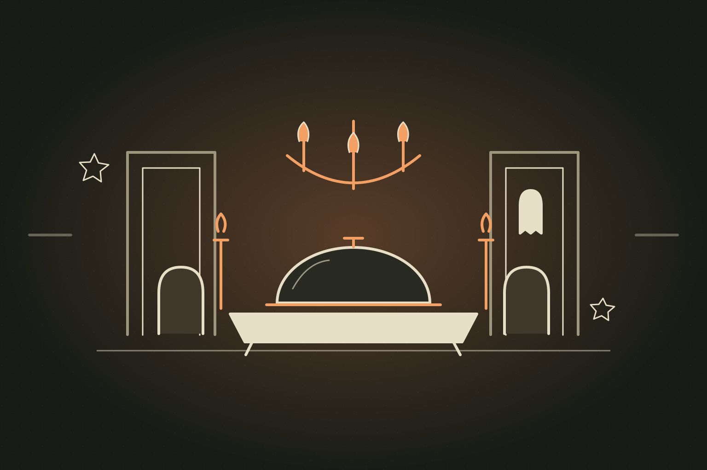
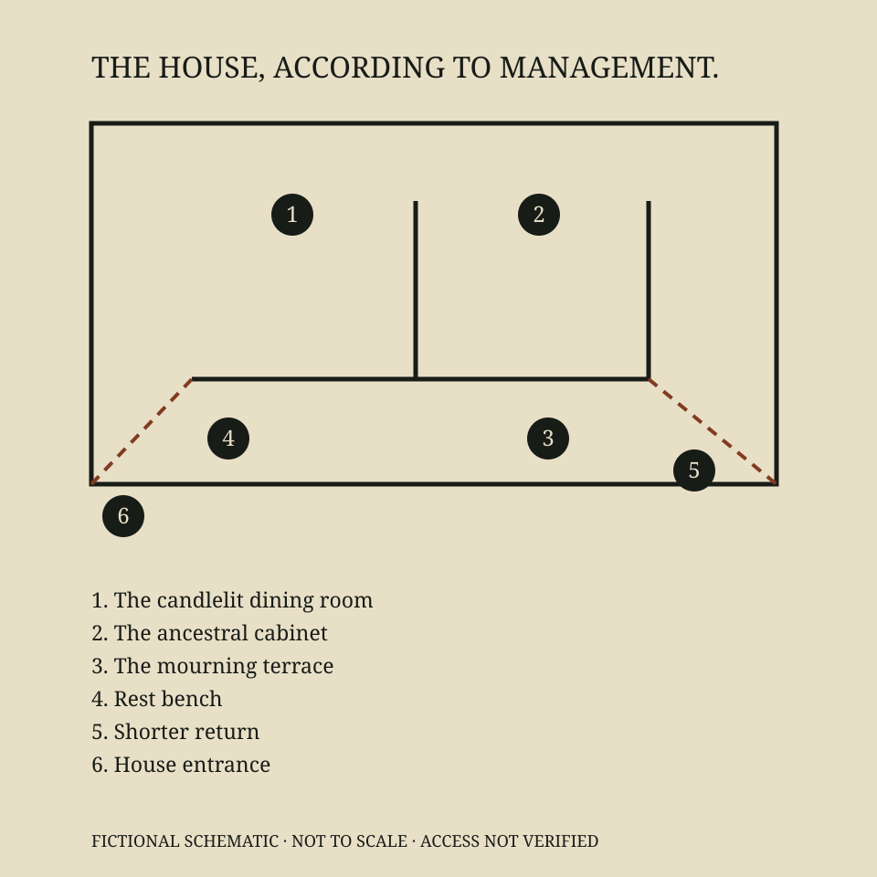

01 / THE HOUSE EXPERIENCE
THE CANDLELIT DINING ROOM COZY HALLOWEEN
The candlelit dining room
An evening of excellent cuts and inherited confidence.
Take a lookGrave Expectations Chop House is a fictional destination. This guide describes an imagined 2026 season; it does not offer bookings, orders, or payments.

AN EVENING OF EXCELLENT JUDGMENT. ALLEGEDLY.
An intimate chop house for people who enjoy a good steak and a lengthy explanation of the chair. Expect seared cuts, restrained candlelight, and a cellar committee whose members have technically stopped attending. Our maître d’ can find your table. Your ancestral seat is another department.
COMPOSED SERVICE. RESTLESS PORTRAITS. CLEAR MENU PRICES.
THE ESTATE AT YOUR DISPOSAL
A candlelit dining room, a mourning terrace and a cabinet of objects whose provenance has been delivered with exceptional confidence.
An evening of excellent cuts and inherited confidence.
Take a look
02 / THE HOUSE EXPERIENCEFresh air for the recently overindulged.
Take a lookProvenance presented with exceptional posture.
Take a lookAn evening of excellent cuts and inherited confidence.
Settle into a candlelit room where the service is composed and the portraits are not. Choose a cut, take your time, and allow the maître d’ to explain a chair that has never asked for representation.
Fictional design intention: step-free access, flexible seating and room to pause. No real facilities have been verified.
Fresh air for the recently overindulged.
A sheltered terrace offers pumpkin lanterns and a useful distance from anyone discussing their cellar. The hedges have been shaped by generations of people with very little else to do.
Fictional design intention: step-free access, flexible seating and room to pause. No real facilities have been verified.
Provenance presented with exceptional posture.
Six objects from the family collection, each accompanied by a confident label and a conspicuous absence of supporting evidence. The raven oversees expenses. It has declined the lighting budget.
Fictional design intention: step-free access, flexible seating and room to pause. No real facilities have been verified.
A FAMILY SEAT. A MINOR OWNERSHIP DISPUTE.
THE HOUSE HAS ALWAYS ENTERTAINED
Our invented estate has welcomed guests since 1866. Whether it has ever formally permitted them to leave is a matter for the guest register.
The first dining room was established for a family whose principal occupation was explaining the family. Supper became a public affair when a solicitor suggested that hospitality might be a more sustainable use of the silver. The suggestion was carried, subject to several unnecessary conditions.
The house now serves seared cuts, considered drinks and a composed evening at the table. The maître d’ manages the room. The portraits manage expectations. The cellar committee manages a collection of opinions that has survived all of its original members.
Between courses, take the terrace air or inspect the ancestral cabinet. Every object has a label. Few have paperwork. Our raven from Accounts regards the distinction as a budgeting issue and has requested that nobody describe the chandelier as an investment.
Good taste need not be inherited.
The dining room will accept an appetite.
THE ANCESTRAL CABINET
Six objects from a family collection with exceptional posture and very limited supporting documentation. All provenance is invented. Browsing only.
Glazed ceramic · Still on the rota
The ghost claims it was promised a permanent position. Accounts says the wording was unfortunate.
Claimed originThe house collection at Grave Expectations Chop House.
A fictional specimen for browsing. The label is confident; the supporting documentation is missing.
Fictional object and provenance. No authenticity claim or purchase.
Brass · Access disputed
Opens a room the floor plan describes as a filing error.
Claimed originThe house collection at Grave Expectations Chop House.
A fictional specimen for browsing. The label is confident; the supporting documentation is missing.
Fictional object and provenance. No authenticity claim or purchase.
Printed card · Forwarding address uncertain
The previous owner says business is looking up. The postmark suggests otherwise.
Claimed originThe house collection at Grave Expectations Chop House.
A fictional specimen for browsing. The label is confident; the supporting documentation is missing.
Fictional object and provenance. No authenticity claim or purchase.
Enamel pin · Seasonal appointment
Passed induction. Has yet to complete the knife-safety module.
Claimed originThe house collection at Grave Expectations Chop House.
A fictional specimen for browsing. The label is confident; the supporting documentation is missing.
Fictional object and provenance. No authenticity claim or purchase.
Souvenir magnet · Strong attachment
Keeps returning to the invoice. The finance team calls this retention.
Claimed originThe house collection at Grave Expectations Chop House.
A fictional specimen for browsing. The label is confident; the supporting documentation is missing.
Fictional object and provenance. No authenticity claim or purchase.
Painted resin · Receipt retained
An excellent attendance record. An extremely conservative approach to expenses.
Claimed originThe house collection at Grave Expectations Chop House.
A fictional specimen for browsing. The label is confident; the supporting documentation is missing.
Fictional object and provenance. No authenticity claim or purchase.
VISITOR SERVICES / DRAWING NO. 013
The dining room, cabinet and terrace, set out without reference to your position in the family. All routes are imagined.
Imagined location at Grave Expectations Chop House.
About 60 minutes · Food purchased separately
Imagined location at Grave Expectations Chop House.
About 15 minutes · Free to browse
Imagined location at Grave Expectations Chop House.
About 20 minutes · Free to enjoy
Imagined location at Grave Expectations Chop House.
Imagined location at Grave Expectations Chop House.
Imagined location at Grave Expectations Chop House.
Fictional schematic, not to scale. Facilities, routes and access are imagined; this is not real navigation.
AN OCCASION WITHOUT A COMMITTEE
Plan a candlelit supper, a little terrace air and a quiet look at the collection. This is a fictional itinerary; it makes no table reservation.
LESS GUESSWORK. MORE GOOD TIMES.
Make the night your own. Here’s how the imagined experience is designed.
Take your time. Skip the terrace.
A complete evening can happen at one table.
No. Grave Expectations Chop House is a fictional Halloween parody property. Names, food, prices, facilities and policies are invented for creative exploration.
Adult diners planning date nights, celebrations, and an elegant Halloween supper with a dry sense of humor.
This creator workspace and its marketing pack do not accept bookings, orders, payments or mailing-list subscriptions.
Ingredients and V tags are working copy, not allergy assurances. Access and sensory details are fictional intentions and require real-world confirmation before use.
No. The imagined house spaces and collection are free to explore; food and drinks have separate menu prices. You can skip any part of the itinerary. Quiet dining concept; children are welcome with their grown-ups. Alcoholic drinks are marked 21+.
Choose a concept date, an offered arrival, your party size and the spaces you want to explore. Save keeps the plan in this browser for this property. Downloads are fictional itineraries, not tickets or reservations.
Halloween decorations and theatrical lighting are imagined. No strobes, chasing or touching are part of the concept. Outdoor spaces are weather dependent. No real facilities or operating policies are promised.
EXCELLENT COMPANY. DISPUTED LINEAGE.
The candles are lit. Your ancestral credentials are unnecessary.